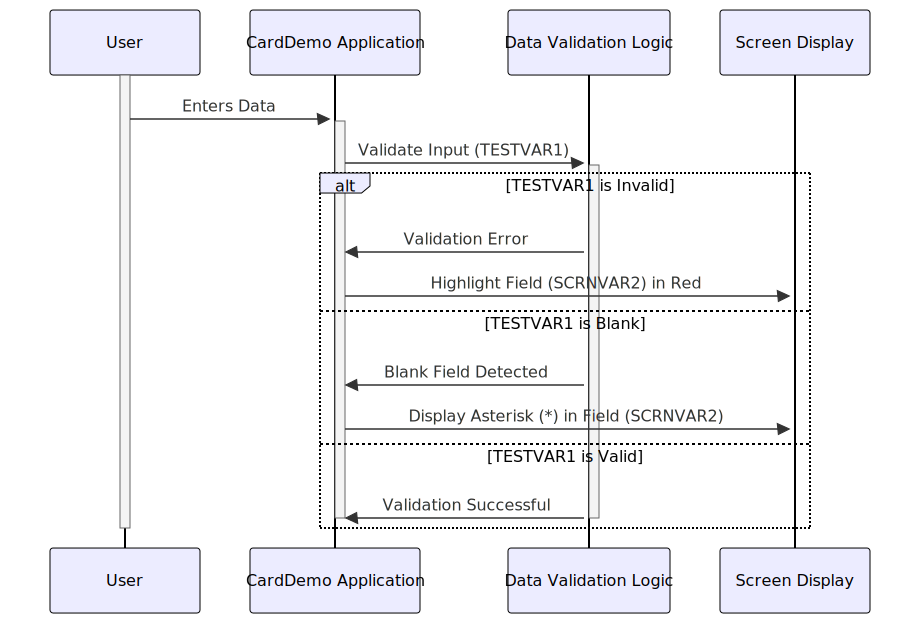

Gerado em: 1º de outubro de 2024
Título do Documento: Especificação de Validação de Campo CardDemo
Descrição Resumida:
Este documento detalha a funcionalidade de um trecho de código dentro do aplicativo CardDemo. Sua função principal é fornecer feedback visual aos usuários durante a entrada de dados, garantindo a precisão dos dados, destacando possíveis erros e orientando os usuários a preencher os campos obrigatórios.
Histórias do Usuário:
Como Representante de Atendimento ao Cliente, preciso de dicas visuais claras na tela para entender se os dados que inseri estão corretos e completos, para evitar erros e garantir a precisão dos dados no sistema.
Épico Relacionado:
9 - Utilitários do Sistema
Requisitos Funcionais:
- RF 01: O sistema deve validar a entrada do usuário em tempo real conforme os dados são inseridos.
- RF 02: Se os dados inseridos forem inválidos, o campo correspondente na tela deverá ser destacado em vermelho.
- RF 03: Se um campo obrigatório for deixado em branco, um asterisco (*) deverá ser exibido dentro do campo.
Regras de Negócio:
- RN 01: As regras de validação de dados para cada campo devem ser predefinidas e aplicadas de forma consistente.
- RN 02: Os campos obrigatórios são definidos pelo projeto do sistema e não podem ser ignorados pelo usuário.
- RN 03: O feedback visual (destaque em vermelho e asterisco) deve ser claro, imediato e perceptível ao usuário.
Requisitos Não Funcionais:
- RNF 01: O processo de validação de campo não deve impactar significativamente o desempenho do sistema.
- RNF 02: O feedback visual deve ser consistente em diferentes resoluções de tela e dispositivos.
- RNF 03: A lógica de validação deve ser sustentável e facilmente adaptável a mudanças futuras nas regras de negócios.
Critérios de Aceitação:
- CA 01: O sistema destaca com sucesso os campos de dados inválidos em vermelho após a entrada.
- CA 02: Um asterisco (*) é exibido corretamente em campos obrigatórios que são deixados em branco.
- CA 03: O processo de validação não causa atrasos ou interrupções perceptíveis no desempenho do sistema.
- CA 04: O feedback visual é acessível a usuários com deficiência visual (por exemplo, esquemas de cores alternativos ou compatibilidade com leitores de tela).
Melhorias de Código:
- MC 01: Implementar tratamento de erros centralizado para gerenciar e registrar erros de validação de forma consistente.
- MC 02: Adicionar documentação abrangente ao trecho de código explicando a lógica de validação, as regras de negócios e quaisquer dependências.
- MC 03: Explorar técnicas de otimização de desempenho se o processo de validação causar atrasos perceptíveis, especialmente para conjuntos de dados grandes ou regras de validação complexas.
Melhorias de Segurança:
- MS 01: Garantir que os dados confidenciais dentro dos campos validados (por exemplo, senhas, números de cartão de crédito) sejam tratados com segurança, seguindo as melhores práticas para criptografia e mascaramento de dados.
- MS 02: Implementar técnicas de higienização de entrada para evitar vulnerabilidades como ataques de script entre sites (XSS), onde código malicioso pode ser injetado por meio de campos de entrada do usuário.
- MS 03: Registrar falhas de validação para rastrear possíveis tentativas maliciosas ou erros do sistema para fins de auditoria de segurança.
Diagrama Conceitual:

–Made by “Smart Engineering” (by Compass.UOL)–